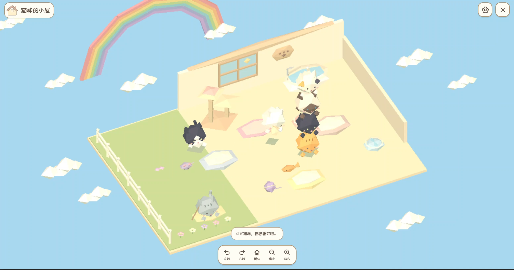
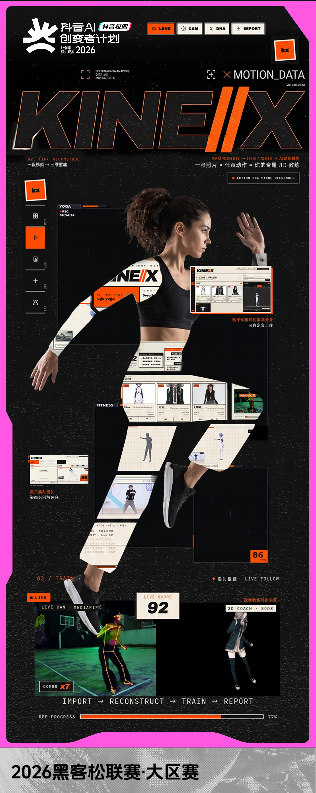
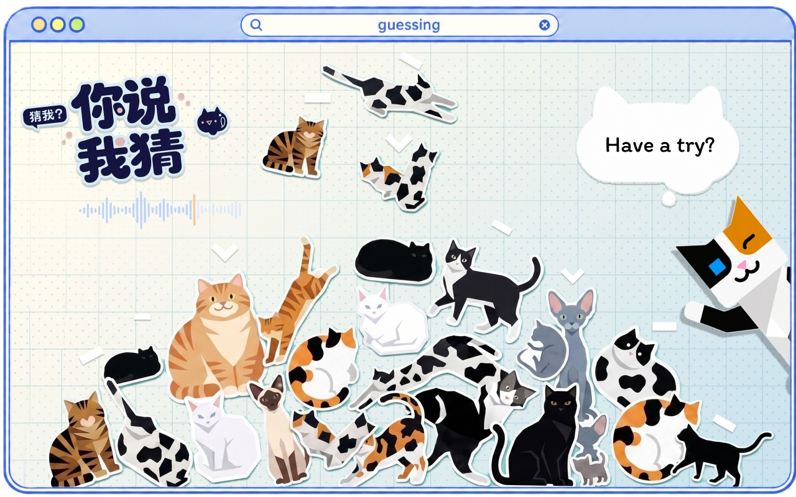
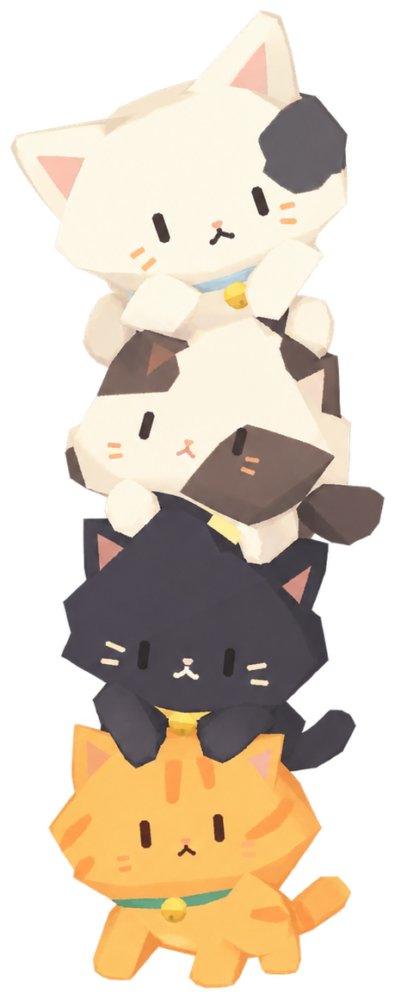

在线游玩meowcat.fun独立开发 · 2026
HellyCat 洗猫猫
用 Codex + Gemini 独立完成的小游戏。从玩法、交互到开发验证，探索 AI 辅助开发与趣味体验。

在线游玩meowcat.fun用 Codex + Gemini 独立完成的小游戏。从玩法、交互到开发验证，探索 AI 辅助开发与趣味体验。
把复杂的动捕能力转化成更轻量的创作工具，探索 AI 如何降低内容生产门槛。
一个移动端交互网页，用趣味反馈把 AI 能力变成可分享的社交体验。
我关注 AI 如何真正进入人的工作与生活。我的优势是把产品思考推进到体验、内容和可运行的原型里。
KIN//X 是一款连接视频素材、3D 动作与数字分身的轻量化 AI 产品。将分散的模型能力整合为连续的创作流程，降低动作重建、预览与资产复用的门槛。黑客松 MVP 曾以动作示范场景验证技术链路；以下以 AI 3D 动捕产品视角整理，完整阶段文档保留在下载中。

亲密关系中的情绪往往充沛而难以表达。争执之后，双方可能从直接冲突转向沉默，缺少重新开启对话的轻松方式。
目标是降低情绪表达的压力，让双方以更轻松的方式开启沟通，并形成彼此专属的“暗语”。
将“想对 Ta 说的话”转译成带有语调与情绪线索的猫语音频，并配合猫咪贴纸可视化。接收方通过听声音、选关键词或表情，猜测留言内容与情绪。
由看板猫“喵神”介绍猫语沟通方式，用对话气泡建立轻松语境，帮助用户理解接下来的任务。
选择朋友、伴侣、Crush、搭子、家人等关系，并标记当前心情，为表达方式与后续反馈提供上下文。
输入想说的话，再选择实时录音、上传音频或“你来帮我说”的文本转语音。录音开始以提示音确认，过程呈现动态音频条与橙色光晕。
生成过程中显示“魔法施展中”；完成后按文本顺序呈现猫咪贴纸与猫语声音。看板猫收起为可唤出的帮助入口。
填写自己的“喵名”，可选填写对方昵称，让秘密留言更具个人感，也用于分享邀请中的称呼。
完成页通过贴纸掉落动画反馈生成结果，引导一键分享互动链接；同时提供猫语音视频的本地保存入口。
由看板猫介绍来信，用发送者昵称建立情境；点击播放神秘音频，并支持反复收听。
从关键词、表情包或 emoji 中作答，猜测对方想表达的话与情绪，减少长文本输入负担。
每次选择都有简短音效与动画回应。答对时用呼噜声、爱心或摇尾巴强化反馈；答错时由看板猫提示可继续探索的线索。
若 15 秒仍未猜出，看板猫发光、摇晃并邀请点击；结合关系、情境与猫咪声音提供提示，避免长时间卡住。
根据正确率与关系类型呈现“默契搭档”“心有灵犀”等称号，随后引导“也给对方出个题”，完成双向互动。
以上交互设计方案DEMO已落地，产品目标、双端流程与反馈机制均经过“抖音AI创变者黑客松”现场观众、导师验证

本项目是一件探讨“隐形崩溃”的AI数字交互游戏。在禁止情绪化外露的当代社会规训下，不是所有情绪都有机会说出口。
我尝试将屏幕变成一个无需言语的情绪出口。让焦虑以网络符号与弹幕的形式出现，再由参与者用面部动作与之互动，将抽象的压力转化为可见、可回应的游戏过程。
张嘴触发文字弹幕，击碎迎面而来的压力符号；随着能量积累，画面与反馈增强。
微笑开启阳光护盾，将压力反弹，以明亮的视觉状态回应积极情绪。
眨眼或半闭眼触发泪水文字与能量积累，达到阈值后形成清屏反馈，让悲伤也成为推动游戏的力量。
结束画面以安慰文字与温和的互动回应参与者，让体验由紧张的对抗转向休息与自我接纳。
“作业好多！想在家大喊，但妈妈说这样不礼貌。”
这句来自八岁妹妹的话，成为作品的起点。我与她共同构思一个可以尽情出声的空间：让平时被压住的声音，成为推动游戏前进的动力。
“哇！气球”由此成为一个安全而柔韧的情绪容器。它既是一件声控交互装置，也是一次将内在感受转化为外在视觉的尝试。
Arduino 采集声音信号，将参与者的声音变化转为游戏输入。
气球的膨胀与收缩呼应呼吸节奏，色彩流转与关卡变化承接情绪的起伏，让不可见的压力拥有可感知的形态。
每一次出声都为气球提供上升动力，推动它挣脱“地心引力”、飞向外太空。在游戏中，声音不再承受是否“合规矩”的评价。
在游戏公司实习时，我受到“人人都是游戏开发者”的影响，希望从一个最小可行版本开始，做出一款视觉呆萌、休闲轻松、玩法新颖，并且可以多端游玩的独立游戏。
洗猫猫的灵感来自现实生活：猫咪洗澡时经常到处乱窜，很难控制。我希望还原这种“慌乱中偶然成功”的趣味，同时表现每只猫咪不同的个性。
除了洗澡玩法，游戏还加入了公告栏、留言板、猫咪图鉴与故事，以及等待探索的彩蛋。希望玩家在了解猫咪性格与经历的过程中，多一点耐心，培养爱心和同理心。
网页版本已部署到阿里云服务器，可以通过浏览器直接游玩；游戏主体也已打包为安卓 APK，可在手机上安装。
游戏支持电脑浏览器和安卓手机，包含十个关卡、猫咪图鉴、猫咪故事、消耗品、结局彩蛋、猫咪小屋和配乐系统。
电脑端显示完整首页，安卓端采用竖屏布局。玩家可以从首页进入关卡，也可以进入猫咪的小屋。
用不同猫咪的形象区分十个关卡，展示已获得的星级。每只猫咪有不同性格和需求；通关解锁对应故事，三星通关可获得消耗品道具。
玩家通过按住和拖拽操作，观察猫咪状态，选择清洁或安抚工具，再尝试把猫咪放入浴缸。猫咪会逃跑、抓伤玩家，也会因状态不同作出不同反应，让简单的目标具有变化和偶然性。
背包集中展示已获得的消耗品和数量，点击查看道具介绍，新道具显示红点提示。设置中可以调节配乐与音效音量、重新开始本关、返回选关、切换白猫和黑猫模式，全通关后还可回看贺卡。
图鉴记录收集进度，并为每只猫咪安排了一封来信。玩家可以了解它们的性格、经历与来到浴室的原因。我希望这些故事让玩家对猫咪多一点耐心，培养爱心和同理心。
完成全部关卡后，玩家会收到猫咪们的神秘礼物。打开礼包可获得三份奖励，并回看一张手绘通关贺卡。
公告栏包含寻猫、领养和故事三个分类，留言板提供玩家交流入口，尝试把游戏扩展成猫咪爱好者交流空间。
小屋采用低面数 3D 模型，把资源主要用于动作与交互。随着关卡推进，对应猫咪会来到小屋；玩家可以照顾猫咪、拖动摆放、摸摸头，并切换环境：白猫模式是漂浮在天空中的小屋，黑猫模式是漂浮在宇宙中的小屋。

我负责确定玩法和视觉方向，检查效果、持续修改并完成上线；AI 参与原型、图像、编码与音乐制作。
开发中途，服务器实例被释放，数据损失了大半。我重新整理资源、恢复部署，也意识到备份的重要性。
一些特殊 UI 很难只通过文字描述。后来我先用 Figma 绘制草图，再让 Codex 根据草图用代码绘制矢量图，最终完成了猫耳朵、房子入口、道具图标、结局卡片等界面。
这个项目由我个人主导，并借助 AI 独立完成。从玩法设计、视觉设计、代码开发、音乐制作，到服务器部署和 APK 打包，我完成了一个完整的独立游戏开发流程。